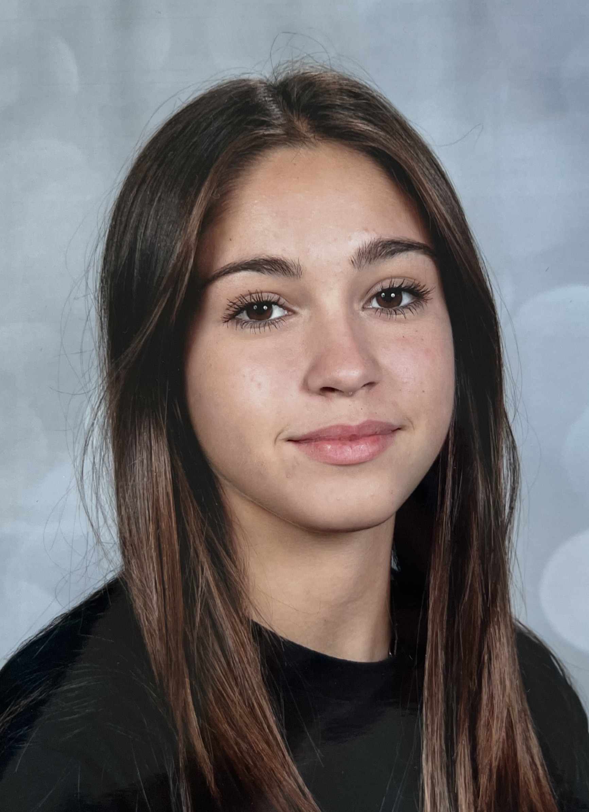

Emma Delannoy

- Adresse : 195 rue de la prévoté, Pérenchies
- Téléphone : 056 52 16 91 97
- email : emma.delannoy@lasallelille.com
Objectif
- Trouver un stage de seconde du 15 au 22 juin 2026 dans le secteur du tourisme
Expérience
- Stage de 4eme en agence de mannequina "Little model" à Lille en février 2024
- Stage de 3eme a l'accueil de l’hôtel "Mercure" à Marcq-en-Barœul en février 2025
- Stage de seconde en agence TUI à Lille en février 2026
Centres d'interêt
Compétences
- A l'aise en langue étrangère
- Appliquer
- A l'écoute
Scolarité
- Collège Jacques Monod, Pérenchies de 2021 à 2023
Jacques Monod
- Collège Sainte Marie, Pérenchies de 2023 à 2025
Sainte Marie
- Lycée Lasalle, lille de 2025 à aujourd'hui
Lasalle